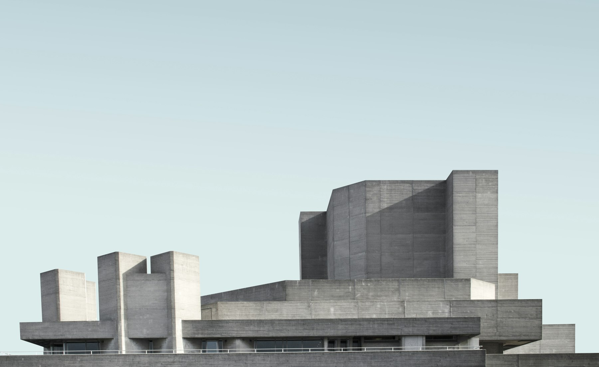

Arquitetura
Estudo de fachada
Exemplo ilustrativo · não é obra atribuída ao escritório
Arquitetura & interiores · Curitiba/PR
Um novo percurso digital para apresentar arquitetura e interiores com clareza — do primeiro olhar ao início da conversa.

Penha Moraes Arquitetura é um escritório de arquitetura e interiores em Curitiba/PR.
Este conceito reorganiza a presença digital para tornar atuação, referências visuais e contato fáceis de encontrar, sem atribuir ao escritório projetos, processos ou credenciais que não constam nas fontes fornecidas.
A seleção abaixo demonstra como um portfólio filtrável poderia funcionar. Nomes, imagens e tipologias são apenas exemplos de interface e não correspondem a obras atribuídas ao escritório.
Exemplo ilustrativo · não é obra atribuída ao escritório

Exemplo ilustrativo · não é obra atribuída ao escritório

Exemplo ilustrativo · não é obra atribuída ao escritório

Exemplo ilustrativo · não é obra atribuída ao escritório
Nenhum exemplo disponível para este filtro.
A informação confirmada, apresentada sem camadas desnecessárias.
Uma entrada dedicada para apresentar projetos arquitetônicos quando o acervo aprovado estiver disponível.
Uma entrada dedicada para apresentar projetos de interiores quando o acervo aprovado estiver disponível.
O formulário demonstra uma triagem inicial. Ele não envia, armazena ou compartilha qualquer informação.